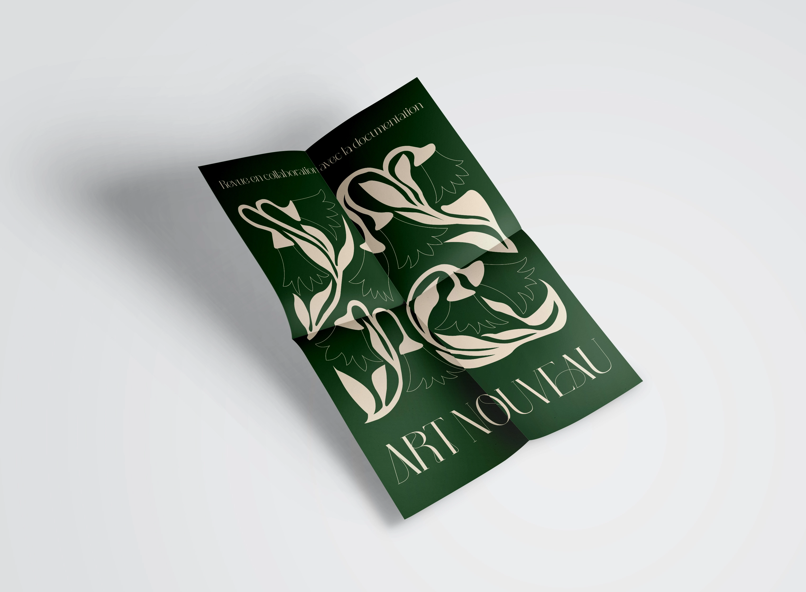
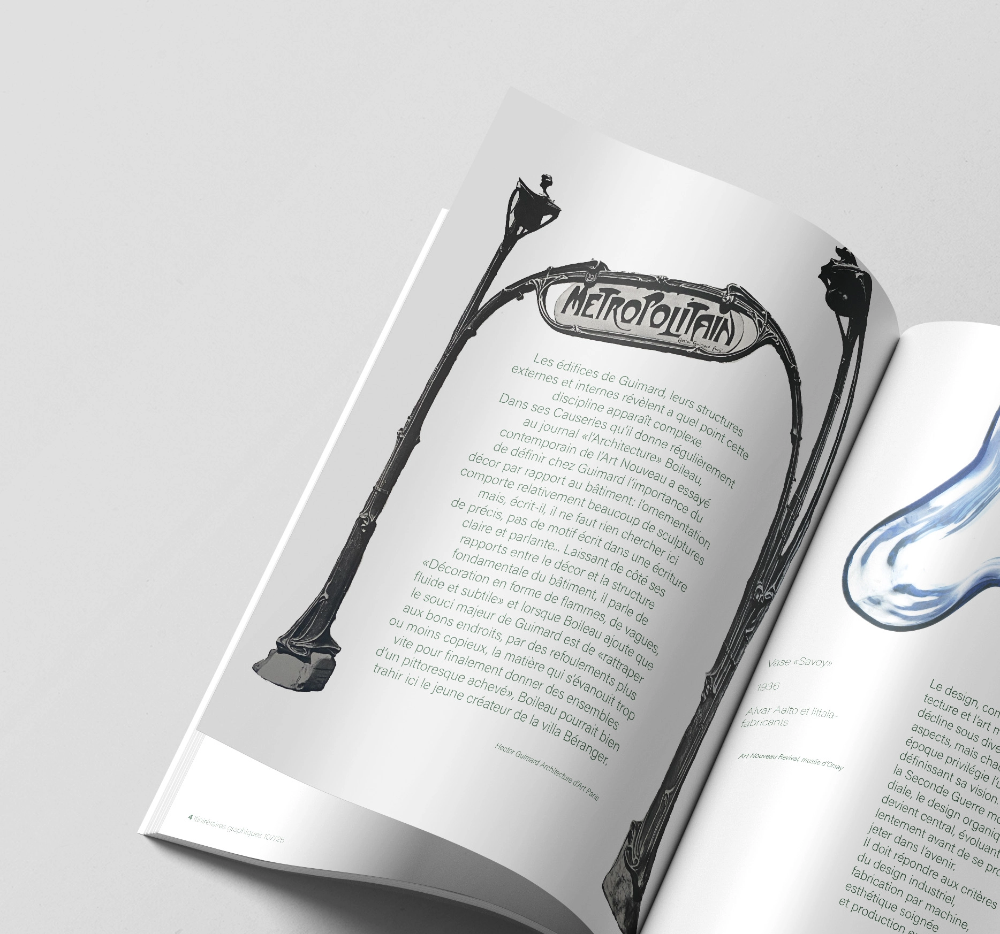
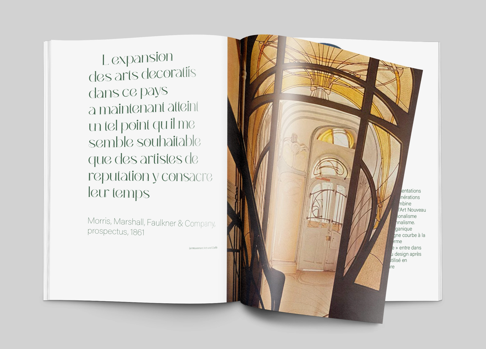
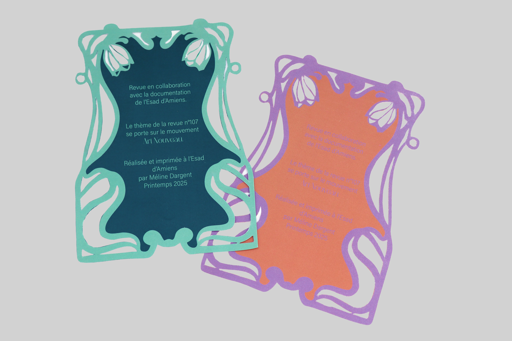

L’Art Nouveau
Magazine collaboratif





En passant par les fresques de Gustave Klimpt, l’architecture emblématique de Gaudi ou encore le travail de Hector Guimard. Cette revue reprend tous les codes de l’Art Nouveau grâce à une bibliographie composée de 10 livres choisis en collaboration avec la documentation d’Amiens. Le but est simple : réussir à franchir le seuil de la documentation et rencontrer Peggy !